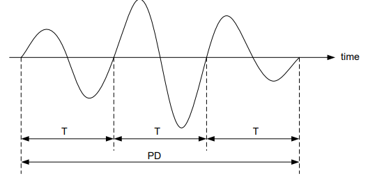
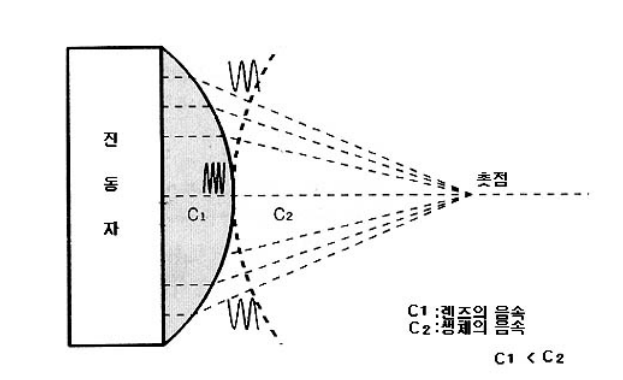
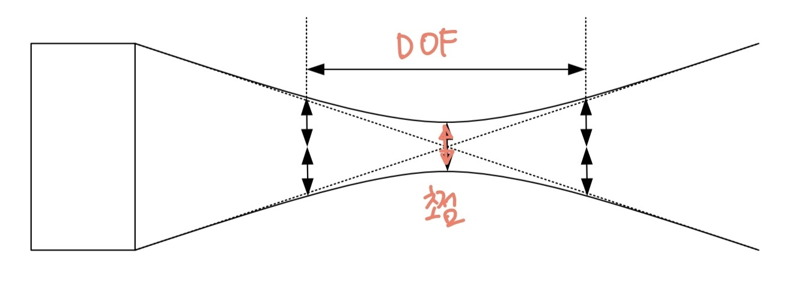

초음파 영상 관련 단위 정리
해상도와 초음파 빔
축방향 해상도(axial resoulution)와 측방향 해상도(lateral resoulution)에 대해 다룰 예정이다.
축방향 해상도(axial resoulution)
축방향 해상도는 송신된 초음파 펄스의 지속시간(Pulse Duration: PD)에 의해 결정된다.
PD가 길면 해상도가 낮아지고, PD가 짧아지면 해상도는 좋아진다.

\[PD = N_c \times T = \frac{N_c}{f(MHz)} [\mu s]\]
여기서 \(N_c\)는 사이클 개수, \(T\)는 주기를 의미한다.
측방향 해상도(lateral resoulution)
이번 파트를 읽을 때 확산각 \(\theta = \frac{1.22\lambda}{D}\) 임을 기억하고 읽어야 한다
측방향 해상도는 빔 폭에 의해 결정된다. 점근선의 폭(\(W\))은 아래와 같다. \[
W
\begin{cases}
D \;\quad \;\quad \;\quad \;\quad \;for \; z < \frac{D^2}{2.44\lambda}\\
= 2\times\frac{1.22\lambda}{D}z \; \quad \; otherwise\\
\end{cases}
\] #### 원거리 음장 위 식을 보면 원거리 음장의 폭을 \(2\times\frac{1.22\lambda}{D}z\)라고 하지만 사실상 그 폭의 절반인 \(\frac{1.22\lambda}{D}z\)을 빔 폭으로 본다.
그 이유는 빔이 가장 강한 곳으로부터 빔의 진폭이 1/2로 줄어드는 아래 위의 폭, 엄밀히는 -6dB(\(20 \cdot \log_{10}(1/2) [dB] = 20 \times -0.3 \approx -6[dB]\)) 빔 폭을 종종 빔폭이라 부르기 때문이다.
근거리 음장
근거리 음장에서는 aperture의 크기, 즉 트랜스듀서 구경 폭이 빔 폭이 된다. 하지만 근거리 음장과 원거리 음장이 만나는 경계에서는 빔이 점근선처럼 그대로 직선으로 뻗어 왔다면 원거리 음장의 빔폭과 서로 일치하지 않게 된다. \[W_{NFL} = \frac{1.2\lambda}{D}\cdot\frac{D^2}{2.44\lambda} =0.5D\]
위 식을 보면 알듯 NFL부근에서 빔 폭은 점점 모양이 무너지다가 교차점 지점에서는 부드러운 봉우리 모양이 된다. 빔 축상의 음압이 더욱 커지며 빔 축상 음압의 절반이 되는 아래 위 두 점 사이의 폭은 구경의 절반 부근이 되어 점근선보다 좁아지기 때문이다.
근거리 음장에서 빔 폭을 줄이는 방법은 aperture 크기를 줄이는 방법(D↓) 밖에 없다. 하지만 aperture의 크기를 줄이게 되면 NFL(\(= \frac{D^2}{4\lambda}\))이 짧아지게 되고 원거리 음장에서는 빔이 크게 확산(\(\theta = \frac{1.22\lambda}{D}\))하게 된다. 만약 NFL을 올리려면 고주파(\(f\)↑)를 사용해야 한다.
aperture와 빔 폭의 관계를 고려한다면 아래와 같다.
- 원거리 음장에서는 주파수가 올라가거나 aperture 크기가 커져도 발산각이 좁아져 발산각(\(\theta\))이 좁아져 측 방향 해상도가 좋아지게 된다.
- aperture 크기가 커진다면 근거리 음장에서의 빔 폭은 커지지만 근거리 음장이 길어져 빔 확산 시작 지점이 멀어지고 원거리 음장의 확산각이 줄어들게 된다.
이를 정리해보면 고주파의 초음파를 사용한다면 원거리 음장에서의 빔폭도 줄고 NFL 길이도 길어진다. 하지만 고주파 초음파를 사용한다면 인체내에서의 감쇠가 심해진다는 것을 유의해야 한다.
음향 렌즈

음향 렌즈(acoustic lens) 는 위 그림처럼 초음파를 집속할 때 사용한다. 초음파 진단기의 경우 음향 렌즈 구성하는 물질의 음속이 인체 내의 음속보다 느리면 볼록 렌즈가 초음파를 모아준다. 반대의 경우엔 오목 렌즈가 초음파를 모아준다. 이를 정리하면 아래와 같다. \[
\begin{cases}
c_2 > c_1 \; \quad \; \to 볼록 렌즈\\
c_2 < c_1 \; \quad \; \to 오목 렌즈\\
\end{cases}
\]
하지만 렌즈를 아무리 완벽하게 만들어도 초음파(빛)의 회절현상으로 인해 초음파(빛)를 한 점에 모을 수는 없다.
f넘버, 초점심도
f넘버 (\(f/\sharp\))
초점에서는 원겨리 영역의 식이 성립되므로 초점거리를 \(z_F\)라 할 때 빔 폭 \(W\)는 다음과 같다.
\[W_F = \frac{1.2\lambda}{D}z_F\]
초점거리(focal length)를 \(f_L\), aperture 크기를 \(D\)라 하면 f넘버 \((f/\sharp , N)\) 는 다음과 같다.
\[f/\sharp = N = \frac{f_L}{D}\] 즉, 원거리 영역에서의 빔 폭은 \(W_F = 1.2\lambda \cdot f/\sharp\)으로 정의할 수 있다.
초점심도 (DOF)

초점에서 빔 폭이 작다면 이는 초점 밖은 빔 폭이 매우 큼을 의미한다.
초점심도(depth of focus: DOF)는 빔 폭이 초점거리에서의 빔 폭의 두 배가 되는 초점 앞 뒤의 빔 축 위의 두점 사이의 거리를 의미한다.
\[DOF = 7\times \lambda \times N^2\]
만약 f넘버가 작다면 DOF는 얕아진다. 이는 원하는 거리, 즉 focusing zone은 고해상도의 영상을 얻지만 그 밖의 거리는 저해상도의 영상을 얻는 것을 의미한다.
반대로 f넘버가 크다면 DOF는 깊어지므로 넓은 범위에서 비슷한 해상도의 영상을 얻을 수 있다.
추가로 수식을 잘 살펴보면 DOF는 aperture의 크기와도 관련이 있는 것을 알 수 있다.
즉 정리하면 한 점만 고해상도로 얻을지 넓은 범위를 적절한 해상도를 얻을 지를 생각하여 적절한 f넘버, DOF의 값을 산출해내는 것이 중요하다.
어레이 트랜스듀서에서는 \(F_L\), aperture 등을 실시간으로 변경이 가능하므로 single에서의 고민이 많이 해결되게 된다.